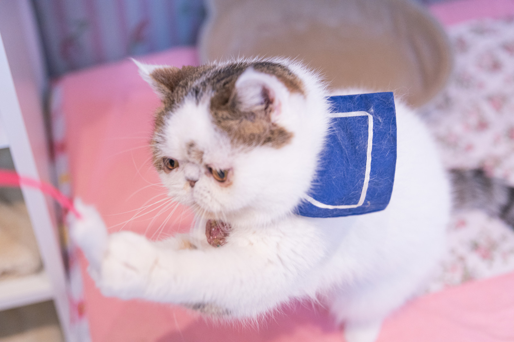
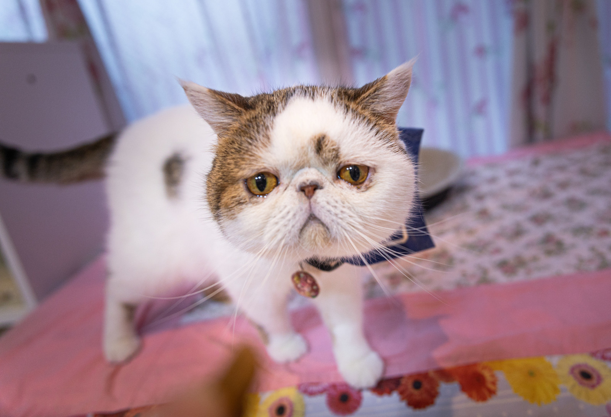
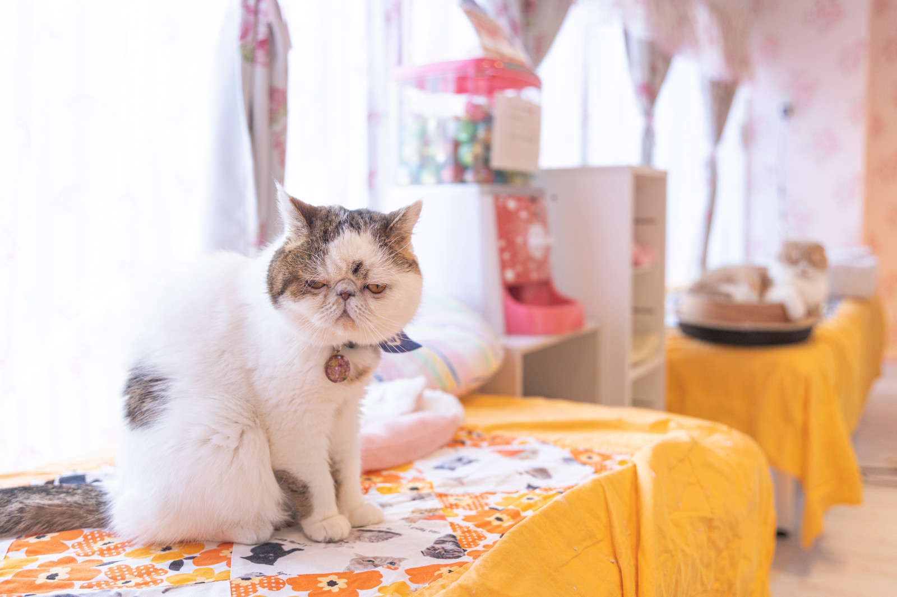

イベント
click( )
- クリックする事でイベントが発生する
-
- $('セレクター').click(function(){
クリックされた時に実行する処理
});
テキスト等を変更する場合
<h3>変更前</h3>
- $('#click-btn').click(function(){
$('#click').text('変わりました！');
});
画像を変える場合

- $('#img-chang-btn').click(function(){
$('.cat-1').attr('src','image/ぬこ２.jpg').attr('atr','ぬこ２');
});
a要素をクリックする場合
画像を変更
- 
- 上の「画像を変更」をクリックすると写真のリンクに飛んでしまう
- そうではなくてクリックで画像などを変えたい場合は return false; を使う
画像を変更
- $('a').click(function(){
$('img').attr('src','image/ぬこ９.jpg').attr('alt','ぬこ９');
return false;
});
- return false;はこの場合aをクリックするとfalseを返すのでリンクを無効化でき、その前でやりたい処理の命令を出すことができる
- googleへこちらはリンク先に飛ぶが
- googleへこちらはリンク先に飛ばずにアラートが出ます
- $('a').click(function(){
alert('移動しません');
return false;
});
- それを応用するとクリックによってスライドを変えられるようなものができる
dblclick( )
-
- ダブルクリックされた時にイベントが発生する
- $('セレクター').dblclick(function(){
ダブルクリックされた時に実行する処理
});

- $('#img-chang-dblbtn').dblclick(function(){
$('.cat-3').attr('src','image/ぬこ４.jpg').attr('atr','ぬこ４');
});
mousedown( )/mouseup( )
- mousedown( )とmouseup( )は特定の要素の上で何らかのボタンが押されたり離されたりした時に処理を実行するもの
-
- $('セレクター').mousedown( )(function(){
マウスダウンされた時に実行する処理
});
- $('セレクター').mouseup( )(function(){
マウスアップされた時に実行する処理
});
- 
- $('#mouseup-btn').mousedown(function(){
$('.cat-5').attr('src','image/ヒョウ１.jpg').attr('atr','ヒョウ１');
});
- $('#mouseup-btn').mouseup(function(){
$('.cat-5').attr('src','image/ぬこ５.jpg').attr('atr','ぬこ５');;
});
mouseover( )/mouseout( )
- mouseover( )とmouseout( )は特定の要素の上でマウスが重なったり外れたりした時に処理を実行するもの
-
- $('セレクター').mouseover(function(){
マウスが重なった時に実行する処理
});
- $('セレクター').mouseout(function(){
マウスが外れた時に実行する処理
});
- 
- $('#mouseover-btn').mouseover(function(){
$('.cat-6').attr('src','image/ぬこ７.jpg').attr('atr','ぬこ７');
});
- $('#mouseover-btn').mouseout(function(){
$('.cat-6').attr('src','image/ぬこ６.jpg').attr('atr','ぬこ６');
});
- バブリング
-
- mouseover( )/mouseout( )では指定した要素内に子要素があるとその子要素においてもイベントが実行される。これをバブリングという
- 上の例では白枠のところにカーソルが乗るとイベントが実行されるようにしたかったが子要素の青い箱に触れてもイベントが適用されてしまう(複数回イベントが実行される)
hover( )
- 対象にカーソルが乗った時や降りた時に処理が実行される点ではmouseover( )とmouseout( )と似ているがhover( )の場合は指定された要素のみに影響を与え、子要素へは影響を与えない
-
特別な理由がなければhover( )を使う方が良い
- hover( )は乗った時と降りた時の処理を両方書く必要がある
- $('#box').hover(function( ){
$('.inner').animate({fontSize : '24px'}, 500);
},function( ){
$('.inner').animate({fontSize : '16px'}, 500);
});
mousemove( )
- 特定の要素上でカーソルが動いた場合に処理を実行する
- 座標情報を取得するのに使われる
- X座標
- Y座標
- $('body').mouseover(function(e){
$('#inputX').val(e.clientX);;
$('#inputY').val(e.clientY);
});
one( )
- 指定したイベントを一回だけ実行する
- $('#one').one('イベントの発生条件',function(){
イベント発生時に実行する処理
});
- $('p').text($('h1').text( ) );
- <p></p>
- クリックイベントを一回押すと画像が変わるが二回目にクリックすると画像のリンク先に飛ぶ
- one

- $('#one').one('click',function(){
$('#one-change').attr('src','image/rainbow.jpg')
return false;
});
on( )
- これまでのイベントの異なる書き方。on( )を使っても結果は同じようになる
- $('セレクター').on('イベントの発生条件',function( ){
イベント発生時に実行する処理
});
- ボタンをクリックする度に要素が前に作られる
- $('push').click(function(){
$(this).before('<dd> id="new">NEW!!</dd>');
});
- これらの要素に変化やイベントを与える事はできない
- →動的に作った要素はまだドキュメントが読み込まれた時に存在していないため
- そこでon( )の出番
-
$('親要素').on('イベント発生の条件','イベント発生の対象',function( ){
イベント発生時に実行する処理
});
- こうする事で動的に作った要素にもイベントや変化を与えられる
- ボタンを押して動的に作った要素にマウスを載せるとcssが効いてクリックすると消える
- $('dd').on('mouseover', '#new-2',function( ){
$(this).css({'backgroundColor':'red',略}).click(
function( ){
$(this).remove( );
});
});
{kind=link}
{kind=link}
{kind=link}
{kind=link}